本章把前面学过的「存储、查找、回收」推到更复杂的对象上：多维数组把多个下标换算成一个线性地址；稀疏矩阵让结点同时进入行链和列链；广义表允许共享甚至成环；Trie 按关键码的字符或位分支；最优 BST、AVL 和伸展树则分别用访问权重、严格高度平衡和访问局部性改进查找。可利用空间表与标记–清除穿插其间，回答这些结点不用以后由谁回收。
读这一章不要只记结构名称。每一节都追问三个问题：一个逻辑对象落在哪些物理位置；一次更新要同时维护哪些不变量；结构失效或空间不足时怎样收尾。 后面的演算都围绕这三问展开。
本章各节的实现状态：
| 小节 | 实现状态 | 代码 |
|---|---|---|
| 12.1 多维数组、特殊矩阵、稀疏矩阵 | 混合 | code/ch12/sparse_matrix 实现十字链表；多维定位仍为公式 |
| 12.2.1 广义表 | 实现并测试 | code/ch12/gen_list |
| 12.2.2 可利用空间表、最优 BST | 实现并测试 | code/ch12/optimal_bst |
| 12.2.3 动态分配与回收 | 实现并测试 | code/ch12/memory_allocator；三种适应策略与相邻块合并 |
| 12.2.4 无用单元回收 | 实现并测试 | code/ch12/storage_recovery；根集与标记–清除 |
| 12.3 Trie 与 Patricia | 实现并测试 | code/ch12/trie |
| 12.4 最优 BST / AVL / 伸展树 | 实现并测试 | code/ch12/optimal_bst、code/ch12/balanced_trees |
其中广义表、Trie/Patricia、AVL 与伸展树原书都没有给清单（第 12 章的清单只有算法12.1、算法12.2），这三个单元是新写的，不认领任何原书清单。
#12.1 多维数组
多维数组是一维数组的扩充：数组的数组就是二维，二维数组再排成一列就是三维。结构上的特点是，元素本身还可以有结构，但同一数组里的元素类型相同。元素个数相对固定，一旦生成通常只改值、不改相对位置和个数，因此自然采用顺序存储。
#12.1.1 多维数组的存储
C++ 里每一维的下界都是 0。二维数组既可以看成 m 个行向量组成的向量，也可以看成 n 个列向量组成的向量。每个元素 ai,j 同时属于第 i 行和第 j 列，最多有两个前驱、两个后继。推到 k 维，每个元素属于 k 个向量。
把数组按某种周游次序排成线性序列，就可以顺序存放。C++ 和 Pascal 按行优先：先排最右的下标，从右往左排。二维数组排出来是
d0×d1×⋯×dn−1 数组中，元素 A[j0,…,jn−1] 相对首地址的偏移是
其中 d 是一个元素所占单元数。每个元素的定位时间相同，所以这是随机存储结构。FORTRAN 按列优先，先排最左下标，公式左右对调。
以 int A[2][3][4] 为例，找 A[1][2][3] 时，不必真的把 24 个元素列出来。最右一维每跨一步跳 1 个元素，中间一维每跨一步跳 4 个，最左一维每跨一步跳 3×4=12 个：
若 int 占 4 字节，字节偏移就是 92。也可以从左往右用霍纳法算：((1 * 3 + 2) * 4 + 3) * 4 = 92。这种写法只需一边读下标一边累乘，不必预存每一维的跨度。定位前仍要逐维检查 0 <= j_i < d_i；公式本身不会替程序发现越界。
把每一步展开，可以同时核对跨度与边界：
| 维 | 下标 | 后续维大小的乘积 | 贡献 |
|---|---|---|---|
| 0 | 1 | 3×4=12 | 12 |
| 1 | 2 | 4 | 8 |
| 2 | 3 | 1 | 3 |
| 合计 | 23 个元素 |
列优先不是把最终答案随意反过来，而是把最左下标当作变化最快的一维。同一个 2 x 3 x 4 形状若按列优先存，[1,2,3] 的元素偏移为 1+2×2+3×(2×3)=23；这个角落碰巧仍是 23，换成 [1,0,0] 就能分辨：行优先为 12，列优先为 1。测试布局时应选这种能区分规则的下标。
#12.1.2 特殊矩阵
矩阵常用二维数组表示，但有些矩阵里大量元素是 0 或同一个常数，不必存整块。
三角矩阵。 n 阶上三角（或下三角）里，对角线一侧全是 0 或常数 c。只需存另一侧加上那个常数，一共 (n2+n)/2 个单元。若用一维数组 list[0 .. (n²+n)/2-1] 存下三角，元素 ai,j（i≥j）前面有 i 行、共 (i2+i)/2 个非零元，再加本行的 j，下标就是 (i2+i)/2+j。
对称矩阵。 ai,j=aj,i。只存下三角（含对角线），另一半用对称关系映射。list 与 ai,j 的对应是：i≥j 时下标 (i2+i)/2+j，否则 (j2+j)/2+i。
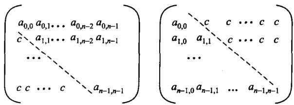
4 阶下三角按行压缩后的区间是 [0]、[1..2]、[3..5]、[6..9]。因此 a3,1 落在 6 + 1 = 7；上三角位置 a1,3 若矩阵对称，则先换成 a3,1，仍读下标 7。先判断三角区域、再套公式，比背两套容易核对。
#12.1.3 稀疏矩阵
非零元很少、分布又不规则时，叫稀疏矩阵。m×n 的矩阵里有 t 个非零元，稀疏因子 δ=t/(mn)；通常 δ<0.05 就按稀疏处理。这时不应再分配整块二维数组，而改存三元组 (行, 列, 值) 的线性表，或用十字链表：每个非零元同时挂在一条行链和一条列链上，便于按行、按列遍历。
三种存法的代价：
| 整块二维数组 | 三元组线性表 | 十字链表 | |
|---|---|---|---|
| 存储量 | mn | O(t) | O(t)，每个元多一个指针 |
| 取 aij | O(1) | O(log t) | O(该行非零元数) |
| 按列扫一遍 | O(m) | O(t)，要滤掉别的列 | O(该列非零元数) |
| 插入一个非零元 | O(1) | O(t)，要挪动后面的项 | O(行内+列内定位) |
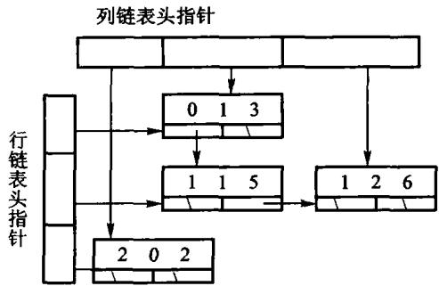
看一个 4×5 的小矩阵，只列非零元：(0,1,8)、(0,4,2)、(2,1,5)、(3,3,7)。结点 (2,1,5) 在第 2 行链里可能是唯一结点，在第 1 列链里却接在 (0,1,8) 后面。把它删掉必须做两次摘链：第 2 行头改为空，第 1 列中让 8 的下继越过 5。只改一条链，按行和按列看到的就不再是同一个矩阵。
插入 (0,1,9) 也不能再造一个同坐标结点；应找到旧结点并覆盖 8。测试十字链表时因此至少要查四件事：新坐标同时出现在两条链、覆盖不增加非零元数、赋值为 0 等价于删除、删除后两条链都找不到它。
| 操作后 | 第 0 行链 | 第 2 行链 | 第 1 列链 | t |
|---|---|---|---|---|
| 初始 | (0,1,8) -> (0,4,2) |
(2,1,5) |
(0,1,8) -> (2,1,5) |
4 |
覆盖 (0,1,9) |
(0,1,9) -> (0,4,2) |
(2,1,5) |
(0,1,9) -> (2,1,5) |
4 |
删除 (2,1) |
(0,1,9) -> (0,4,2) |
空 | (0,1,9) |
3 |
第二行是十字链表吃亏的地方，第三行才是它存在的理由。code/ch12/sparse_matrix 的实现里，插入时在两条链上各定位一次并同时接上，删除时同样从两条链上各摘一次——都是局部操作，不碰其他行列。测试用一个 200×200 的对角线矩阵量过：扫第 7 列只走过 3 个结点，而不是全表的 202 个。
结点所有权归容器，两条链都是裸指针，析构沿行链迭代释放。这里不能用 unique_ptr 串链——一行里非零元一多，递归析构就会压穿栈（判据见 2.3.1 节的「所有权工具怎么选」；实测数字在该单元的 legacy.md 里）。
#12.2 广义表和存储管理
线性表的元素是不可再分的原子。广义表放宽这条：元素可以是原子，也可以是另一个广义表。按是否共享、是否有环，分成三种：纯表对应树（每个子表只出现一次）；再入表对应有向无环图（子表可以被共享）；循环表对应有环图。存储上常用带头尾指针的结点；表一旦共享，释放时就必须处理别名，不能只按树来递归 delete。
#12.2.1 广义表的定义和存储结构
表头是第一个元素，表尾是去掉表头后剩下的那个表。空表既没有头也没有尾。任何一个非空广义表都可以唯一地拆成「头 + 尾」，所以递归算法写成「先处理头、再处理尾」就和定义对上了。
对 L=(a,(b,c),d) 连续拆解：head(L)=a，tail(L)=((b,c),d)；对子表 (b,c)，头是 b、尾是 (c)。长度只数最外层的三个元素，得到 3；深度要进入子表，得到 2；原子数则遍历所有层，得到 4。三个指标回答不同问题，不能从括号或逗号数机械推出。
结点通常有一个标记位，区分原子和子表：原子结点存值，子表结点存指向另一个表的指针。再加表头结点，可以把空表和共享关系表示得更干净。原书图 12.7–12.9 画的就是无头结点、带头结点、以及带循环的几种。
先跑一遍：
#include "modern.hpp"
#include <cstdio>
int main() {
using dsa::advanced::GenList;
const GenList list = GenList::parse("(a,(b,c),d)");
std::printf("表 : %s\n", list.to_string().c_str());
std::printf("表头 : %s\n", list.head()->to_string().c_str());
std::printf("表尾 : %s\n", list.tail()->to_string().c_str());
std::printf("长度 %zu，深度 %zu，原子 %zu 个\n",
list.length(), list.depth(), list.atom_count());
// 再入表：同一个子表挂到两处，靠引用计数而不是拷贝。
const GenList shared = GenList::parse("(b,c)");
const GenList host = GenList::cons(shared, GenList::cons(shared, GenList()));
std::printf("共享后 : %s，被引用 %zu 次\n", host.to_string().c_str(), shared.use_count());
return 0;
}表 : (a,(b,c),d)
表头 : a
表尾 : ((b,c),d)
长度 3，深度 2，原子 4 个
共享后 : ((b,c),(b,c))，被引用 3 次最后一行是本节的难点：(b,c) 只有一份，挂在两处，引用计数是 3（自己一份，两个宿主各一份）。共享一旦发生，回收就不能再按树递归 delete——那会把同一个结点删两次。所以结点上带计数，句柄负责加减：
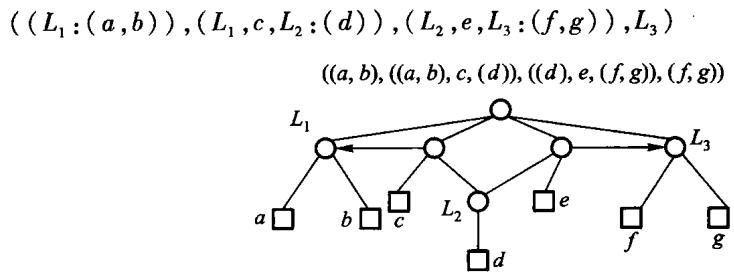
static void retain(GenNode* node) noexcept {
if (node != nullptr) {
++node->refs;
}
}
static void release(GenNode* node) noexcept {
// 计数归零才真正删除；共享的子表因此只会被删一次。
while (node != nullptr && --node->refs == 0) {
GenNode* const head = node->head;
GenNode* const tail = node->tail;
delete node;
// 表尾用循环走，长表不会把栈压穿；表头递归，深度由嵌套层数决定。
release(head);
node = tail;
}
}release 沿表尾迭代、只对表头递归，因此三万个元素的长表析构不会压穿栈，栈深度只跟嵌套层数走。这里不用 shared_ptr：12.2 要教的就是「谁来回收共享结点」，交给标准库这一节就没了。
引用计数收不回环。构造函数自底向上建表，本书的接口造不出循环表；code/ch12/storage_recovery 用根集和真正的对象图（每个对象可以有多条出边）演示标记–清除如何回收无根环，见 12.2.4。它不冒充真实运行时垃圾回收器。
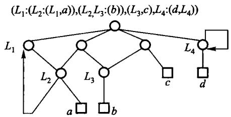
#12.2.2 可利用空间表
原书用重载 operator new/delete 和一条全局 avail 链实现结点复用。所有对象共享隐式全局状态，生命周期结束时还要 ::delete 整条链。现代实现改成显式的索引句柄池：acquire 从空闲栈弹出一个下标，release 把它推回去；耗尽返回 nullopt，重复/越界归还返回 false。释放后的下标失效，get 得到空指针。
普通二叉搜索树只要求中序遍历有序，树形可能很多。若键的查找频率不同，应把常查的键放得更靠近根。最优 BST 的输入包括成功查找权 p[1..n] 与失败查找权 q[0..n]；动态规划对每个区间尝试每一个键作根，选择「左子树代价 + 右子树代价 + 本区间总权」最小的方案。
教材样例 p = {1,5,4,3}、q = {5,4,3,2,1} 的总成本是 57，根是第 2 个键。cost[i][j] 是区间代价，root[i][j] 记录取得最小值的根，因而还能按根表重建树形。朴素实现为 O(n³)。
先跑一遍：
#include "modern.hpp"
#include <iostream>
int main() {
dsa::advanced::ReusableNodePool<int> pool(2);
const auto first = pool.acquire(11);
const auto second = pool.acquire(22);
std::cout << "申请到槽 " << *first << " 和 " << *second
<< "，剩余 " << pool.available() << '\n';
pool.release(*first);
const auto reused = pool.acquire(44);
std::cout << "归还后再申请得到槽 " << *reused
<< "，值为 " << *pool.get(*reused) << '\n';
const auto tree = dsa::advanced::optimal_bst({1, 5, 4, 3}, {5, 4, 3, 2, 1});
std::cout << "最优 BST 总成本 " << tree.cost[0][4]
<< "，根为键 " << tree.root[0][4] << '\n';
}c++ -std=c++17 -Wall -Wextra -Werror -Icode/ch12/optimal_bst \
code/ch12/optimal_bst/demo.cpp -o /tmp/bst-demo
/tmp/bst-demo申请到槽 0 和 1，剩余 0
归还后再申请得到槽 0，值为 44
最优 BST 总成本 57，根为键 2把 optimal_bst({1,2}, {3,4}) 这种长度对不上的输入送进去，会抛 std::invalid_argument。空树对应 p = {}、q = {某个失败权}，代价为 0。
池用 vector<optional<T>> 表示槽位占用，vector<size_t> 当空闲栈。构造时下标从大到小入栈，所以第一次 acquire 拿到 0。release 先确认该槽确实被占用，再 reset 并归还。
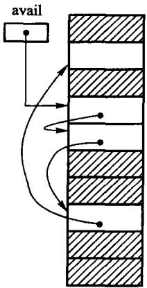
容量为 3 时，状态可以直接写成一张账：初始空闲栈顶依次是 0,1,2；申请 A、B 后，句柄分别是 0、1，只剩 2；归还 0 后，空闲栈是 0,2；再申请 C 会复用 0。旧句柄 0 在归还那一刻已经失效，数值虽然后来又出现，却代表新的占用期。真实系统若要识别「拿旧句柄误访问新对象」，还会在句柄中加入代数（generation）；本节的简化池只保证空闲槽不可读和重复释放会失败。
| 动作 | 槽 0 | 槽 1 | 槽 2 | 下一可用 |
|---|---|---|---|---|
| 初始 | 空 | 空 | 空 | 0 |
acquire(A) |
A | 空 | 空 | 1 |
acquire(B) |
A | B | 空 | 2 |
release(0) |
空 | B | 空 | 0 |
acquire(C) |
C | B | 空 | 2 |
这个表也解释了为什么 release 不能只把下标推回空闲栈：若不先确认槽位处于占用状态，重复归还 0 会让空闲栈出现两个 0，之后 A、B 两次申请可能拿到同一个槽。
template <typename T>
class ReusableNodePool {
public:
explicit ReusableNodePool(std::size_t capacity) : slots_(capacity) {
for (std::size_t index = 0; index < capacity; ++index) {
free_.push_back(capacity - index - 1);
}
}
[[nodiscard]] std::optional<std::size_t> acquire(const T& value) {
if (free_.empty()) {
return std::nullopt;
}
const std::size_t index = free_.back();
free_.pop_back();
slots_[index] = value;
return index;
}
bool release(std::size_t index) {
if (index >= slots_.size() || !slots_[index]) {
return false;
}
slots_[index].reset();
free_.push_back(index);
return true;
}
[[nodiscard]] const T* get(std::size_t index) const noexcept {
if (index >= slots_.size() || !slots_[index]) {
return nullptr;
}
return &*slots_[index];
}
[[nodiscard]] std::size_t available() const noexcept { return free_.size(); }
private:
std::vector<std::optional<T>> slots_;
std::vector<std::size_t> free_;
};#12.2.3 存储的动态分配和回收
程序运行中向系统要一块、用完还回去。空闲块和已分配块穿插之后，会出现两种碎片：外部碎片是空闲区被切得太碎，哪一块都装不下新请求；内部碎片是分出去的块比实际需要大，多出来的字节浪费在块内。
选哪一块空闲区，有三种经典策略。首次适应从低地址扫到第一块够大的；最佳适应找刚好够用的最小块；最坏适应找当前最大的块。三者只在「挑哪一块」这一步不同，分裂与合并完全一样。
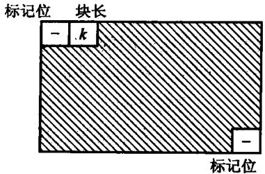
差别用一个例子最清楚。设空闲区依次是 500、200、300、600 字节（中间被已分配块隔开，所以不会合并），现在要 212 字节：
| 策略 | 挑中 | 剩下的碎片 | 代价 |
|---|---|---|---|
| 首次适应 | 500 那块 | 288 | 找到就停，扫得最少；小碎片在低地址堆积 |
| 最佳适应 | 300 那块 | 88 | 大块留住了，但剩下的碎片最碎、最难再用 |
| 最坏适应 | 600 那块 | 388 | 剩下的还大到能再分一次；大块很快被拆光 |
code/ch12/memory_allocator 实现了这三种，测试用的正是上面这组数字。只在一块空闲区上测是分辨不出三种策略的——那种布局下三者必然挑中同一块，把最佳适应和最坏适应的判据对调，测试照样全绿。
无论哪种策略，相邻的空闲块都应当合并，否则外部碎片只会越来越多。「外部碎片」是可以直接量出来的：释放出两个不相邻的 30 字节空洞后，空闲总量有 60 字节，但最大的一块只有 30——45 字节的请求就会失败；把中间那块也释放掉、三块并成一整块之后，同样的请求立刻能满足。
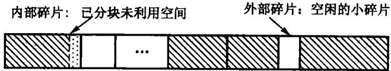
合并要分四种位置关系。设释放块为 M：左右都忙，M 单独入空闲表；只有左边空闲，扩大左块；只有右边空闲，把右块的起点移到 M；左右都空闲，把三块合成一块。顺序表实现可以检查前后项，边界标记则从 M 的块头、块尾直接找到物理邻居。
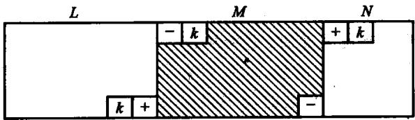
原书提到的边界标记（块头块尾各记一份大小与忙闲）解决的是「怎么在 O(1) 内找到物理相邻的邻居」。本书的实现把块表按偏移升序排列，相邻块就是表里相邻的项，表达的是同一个想法；代价是定位要扫表而不是 O(1)，这一点写在实现的注释里，不冒充。
#12.2.4 失败处理策略和无用单元回收
分配失败时可以：直接拒绝；压缩（把已分配块搬到一起，挤出一整块空闲）；或者做垃圾回收，把程序已经够不着、却还占着的块收回来。
引用计数给每个对象记有多少指针指着它，减到零就释放。实现简单，但对象互相指形成环时，计数永远掉不到零，这块内存就漏了。标记–清除从一组根（栈上的指针、全局变量）出发走遍所有还能碰到的对象并打上标记，然后扫一遍堆，没标记的统统回收。它能处理环，但要求能从根集走到每一个活对象，并且要能区分「这是指针」和「这只是一个看起来像地址的整数」。
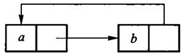
例如根集只有 R -> A -> B，另有 C -> D -> C。标记栈先压 A，继而标 A、B；C、D 虽然各有一个入边，却从任何根都走不到。清除阶段保留 A、B，回收 C、D。这里判生死的是可达性，不是入度或引用数；这正是循环引用能被整组收回的原因。
| 阶段 | 待处理栈 | 已标记 | 动作 |
|---|---|---|---|
| 放入根 | A |
A | 根先标记再入栈 |
| 弹出 A | B |
A、B | 沿 A -> B 发现 B |
| 弹出 B | 空 | A、B | 标记阶段结束 |
| 清扫 | 空 | A、B | 保留 A、B；回收 C、D |
一定要「先标记、再入栈」。若等到弹出时才标，环或菱形共享会把同一结点反复压栈；结果也许仍对，空间和时间却可能失控。
本章的句柄池把「失败」做成返回 nullopt，不劫持全局 new，也不假装自己是通用垃圾回收器。
code/ch12/storage_recovery 把标记–清除做成可运行的：出边是一张表（一个对象可以指向多个对象），collect() 接受一组根。它演示的核心是「可达性是从根走出来的，与有多少人指着我无关」——一个被三处引用、却谁都够不着根的对象，引用计数收不回，标记–清除照收。
标记阶段用显式栈而不是递归：垃圾回收恰恰是在内存吃紧时跑的，那时最不该再去吃调用栈（同 2.3.1 节「所有权工具怎么选」的判据）。测试里有 20 万个对象的深链，递归标记必然压穿栈。
它仍然是教学模型：没有栈扫描、没有写屏障、没有分代，也不区分「这是指针」和「这只是个看起来像地址的整数」——而那恰恰是真实垃圾回收器最难的部分。
#12.3 Trie 结构和 Patricia 树
二叉搜索树按整个关键码比较，树的形状依赖插入次序。Trie 换一种切法：按关键码的字符（或二进制位）一层一层分支，第 i 层对应第 i 个字符。公共前缀在树里只存一次，所以它特别适合字典、IP 路由这种「按前缀分类」的问题。查找沿着字符走，时间与关键码长度成正比，与表里有多少个词关系不大。
把 can、car、cat、do 插进一棵字母 Trie，公共前缀 ca 只出现一次：
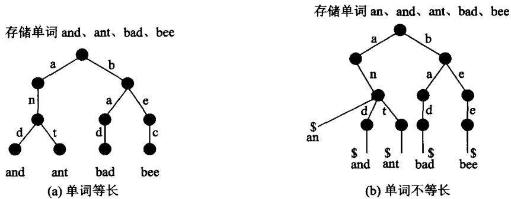
·
/ \
c d
| |
a o*
/|\
n* r* t*带 * 的是词尾。查找 car 走 c–a–r，三步；查找 cab 在 b 处没有分支，失败。最长前缀匹配（路由）则走到不能再走为止，回退到最近的词尾。
先跑一遍。上面那棵图里的结点数不是数出来的，是程序报的：
#include "modern.hpp"
#include <cstdio>
int main() {
dsa::advanced::Trie trie;
dsa::advanced::PatriciaTree patricia;
for (const char* word : {"can", "car", "cat", "do"}) {
trie.insert(word);
patricia.insert(word);
}
std::printf("Trie : %zu 个词，%zu 个结点（字符总数 11）\n",
trie.size(), trie.node_count());
std::printf("Patricia : %zu 个词，%zu 个内部结点\n",
patricia.size(), patricia.internal_count());
std::printf("前缀 ca 下有 %zu 个词：", trie.count_with_prefix("ca"));
for (const auto& word : trie.keys_with_prefix("ca")) {
std::printf("%s ", word.c_str());
}
std::printf("\n最长前缀匹配 dozen -> %s（走不动就回退到最近词尾）\n",
trie.longest_prefix_of("dozen").c_str());
return 0;
}Trie : 4 个词，7 个结点（字符总数 11）
Patricia : 4 个词，3 个内部结点
前缀 ca 下有 3 个词：can car cat
最长前缀匹配 dozen -> do（走不动就回退到最近词尾）第一行就是前缀共享的全部价值：四个词一共 11 个字符，树里只有 7 个结点，因为 ca 只存了一次。最长前缀匹配的写法就是「一路往下走，随手记住最近一次经过的词尾」：
/// 最长前缀匹配：走到走不动为止，回退到最近的词尾。IP 路由查表就是这个动作。
[[nodiscard]] std::string longest_prefix_of(std::string_view text) const {
const Node* node = &root_;
std::size_t best = 0;
for (std::size_t i = 0; i < text.size(); ++i) {
if (!is_letter(text[i])) {
break;
}
const Node* next = node->children[index_of(text[i])].get();
if (next == nullptr) {
break;
}
node = next;
if (node->terminal) {
best = i + 1;
}
}
return std::string(text.substr(0, best));
}纯 Trie 在「只有一个孩子」的内部结点上仍然分支，路径偏长。Patricia 树把这种单孩子结点压缩掉，边上记下「跳过几位再比」。查找时按记下的位位置取关键码的那一位，决定走左还是走右。路径更短，结点更少，仍然保持前缀共享——同样四个词，Patricia 只要 3 个内部结点。
按位取值和「两个关键码第一次不同在第几位」是 Patricia 的两块基石：
static bool bit_of(std::string_view key, std::size_t index) noexcept {
const std::size_t byte = index / 8;
if (byte >= key.size()) {
return false; // 越过关键码长度，一律读 0
}
const auto value = static_cast<unsigned char>(key[byte]);
return ((value >> (7 - index % 8)) & 1U) != 0;
}
static optional_bit first_differing_bit(std::string_view a, std::string_view b) {
const std::size_t longest = a.size() > b.size() ? a.size() : b.size();
const std::size_t bits = (longest + 1) * 8; // +1 让「一个是另一个的前缀」也能分开
for (std::size_t i = 0; i < bits; ++i) {
if (bit_of(a, i) != bit_of(b, i)) {
return {true, i};
}
}
return {};
}越过关键码长度的位一律读作 0，这样「一个关键码是另一个的前缀」（a 与 ab）也能分开，代价是关键码里不能出现 '\0'。还有一处不能省：沿位下降到叶之后，必须和叶上的完整关键码再比一次——路上只看了少数几位，不比就会把 ca、cars 这种根本不在表里的串判成命中。
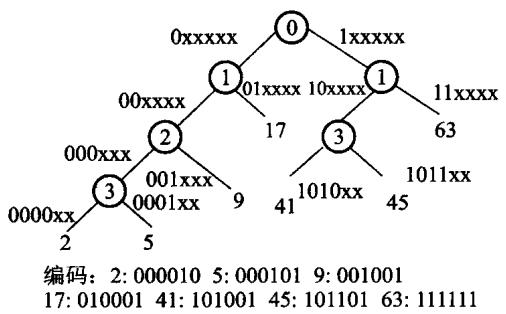
以单字节 'a' 与 'c' 为例，ASCII 分别是 01100001 和 01100011，第一次不同在从 0 起算的第 6 位。Patricia 内部结点只记这个分歧位：该位为 0 走一边，为 1 走另一边；前面六个相同位不再各占一层。再插入键时，先走到叶并找出首个不同位，再把新分支插到位号仍保持递增的位置，否则查找路径会跳过应比较的位。
#12.4 改进的二叉搜索树
#12.4.1 最佳二叉搜索树
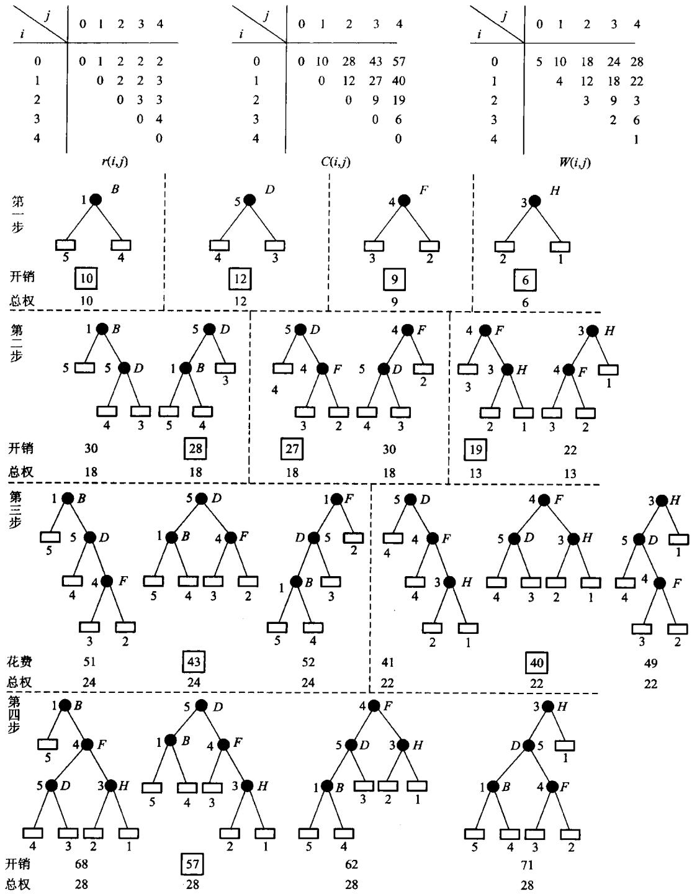
最优 BST 先校验 q.size() == p.size() + 1。空区间的 cost[i][i] = 0，weight[i][i] = q[i]。长度从 1 扩到 n，对每个区间 [first, last] 枚举根 r，候选代价是 cost[first][r-1] + cost[r][last] + weight[first][last]。
struct OptimalBstResult {
std::vector<std::vector<long long>> cost;
std::vector<std::vector<std::size_t>> root;
};
inline OptimalBstResult optimal_bst(const std::vector<int>& successful,
const std::vector<int>& unsuccessful) {
if (unsuccessful.size() != successful.size() + 1) {
throw std::invalid_argument("weight count");
}
const std::size_t count = successful.size();
OptimalBstResult result{
std::vector<std::vector<long long>>(count + 1,
std::vector<long long>(count + 1, 0)),
std::vector<std::vector<std::size_t>>(count + 1,
std::vector<std::size_t>(count + 1, 0))};
std::vector<std::vector<long long>> weight(
count + 1, std::vector<long long>(count + 1, 0));
for (std::size_t index = 0; index <= count; ++index) {
// The book's c table measures internal-key comparison cost; an empty
// interval has zero c cost while its unsuccessful weight remains in w.
result.cost[index][index] = 0;
weight[index][index] = unsuccessful[index];
}
for (std::size_t length = 1; length <= count; ++length) {
for (std::size_t first = 0; first + length <= count; ++first) {
const std::size_t last = first + length;
weight[first][last] = weight[first][last - 1] + successful[last - 1] +
unsuccessful[last];
result.cost[first][last] = std::numeric_limits<long long>::max() / 4;
for (std::size_t root = first + 1; root <= last; ++root) {
const long long candidate = result.cost[first][root - 1] +
result.cost[root][last] + weight[first][last];
if (candidate < result.cost[first][last]) {
result.cost[first][last] = candidate;
result.root[first][last] = root;
}
}
}
}
return result;
}动态规划为什么要按区间长度递增，可以在长度 2 的区间上看清。算 [i,j] 时，若选 r 为根，必须已经知道 [i,r-1] 和 [r,j] 的最优代价；它们都比当前区间短。每试一个根，本区间总权 weight[i][j] 都要再加一次，因为挂到新根下面后，区间内每种成功或失败查找的深度都增加 1。root[i][j] 不是附带输出，而是重建树时的路线图：先取整段根，再递归查左右两个子区间。
教材样例的关键格可以逐层核算：
| 区间 | 总权 w | 最优代价 c | 根 |
|---|---|---|---|
[0,1] |
10 | 10 | 1 |
[1,2] |
12 | 12 | 2 |
[2,3] |
9 | 9 | 3 |
[3,4] |
6 | 6 | 4 |
[0,2] |
18 | 28 | 2 |
[1,3] |
18 | 27 | 2 |
[2,4] |
13 | 19 | 3 |
[0,3] |
24 | 43 | 2 |
[1,4] |
22 | 40 | 3 |
[0,4] |
28 | 57 | 2 |
最后一格选根 2 时，候选值是 c[0][1] + c[2][4] + w[0][4] = 10 + 19 + 28 = 57。这既复算了演示程序的输出，也能抓住把 weight 漏加或多加一次的实现错误。
#12.4.2 平衡的二叉搜索树
普通 BST 按插入次序生长，若键已经有序，会退化成一条链，查找变成 O(n)。平衡二叉搜索树在每次插入、删除之后做少量旋转，把左右子树的高度差限制住，从而保证树高 O(log n)。
AVL 树给每个结点记一个平衡因子：右子树高度减左子树高度，只允许 −1、0、1。插入或删除使某个祖先的因子变成 ±2 时，按「哪边沉、沉在内侧还是外侧」分成四种情形。外侧失衡一次单旋转就能拉平；内侧失衡要先把孙子转到孩子、再把孩子转到祖先，即双旋转。旋转是局部的，不改变中序次序。查找、插入、删除最坏都是 O(log n)。
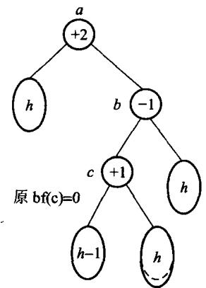
四种情形用中序仍保持 A<B<C 来记（圆括号里是子树）：
LL（左左，一次右旋） RR（右右，一次左旋）
C A
/ \
B → B
/ \
A C
LR（左右，先左旋再右旋） RL（右左，先右旋再左旋）
C A
/ \
A → B
\ / \
B A C插入 1、2、3 会走出 RR：先得到右链 1-2-3，在 1 上左旋变成以 2 为根的平衡树。插入 3、2、1 是对称的 LL。插入 1、3、2 是 RL：先在 3 上右旋，再在 1 上左旋。删除一个结点后，从被删处向上检查，哪一层变成 ±2 就在那一层做同样的旋转；有时旋转一次还不够，要继续向上走。
四组最小输入正好能当旋转单元测试：3,2,1 -> LL，1,2,3 -> RR，3,1,2 -> LR，1,3,2 -> RL，结果都应以 2 为根，中序都为 1,2,3。只测中序不够，因为一棵退化链的中序也正确；还要查根、高度和平衡因子，才能证明旋转真的发生。
红黑树是另一种近似平衡，用颜色规则保证最长路径不超过最短路径的两倍，旋转次数有常数上限，见第 11.5 节。 可运行的 AVL 四旋转实现见 code/ch12/balanced_trees/modern.hpp，测试检查中序有序、查找、删除和高度边界。
#12.4.3 伸展树
伸展树不在结点上存平衡因子。每次访问（查找、插入、删除）一个结点之后，用旋转把它搬到根附近：最近被用到的键下次更容易先碰到。这是一种自调整，均摊 O(log n)。
从被访问结点走到根，每次看它、父结点和祖父结点的形状。一字形（连续两次同向）先转祖父、再转父；之字形（先左后右，或先右后左）先转父、再转祖父。两种双旋都把目标提升两层，但对其余结点的重排不同。目标只差一层到根时，再做一次单旋转即可。半伸展不会每次都把目标送到根，旋转更少，但保证也与全伸展不同。
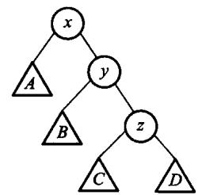
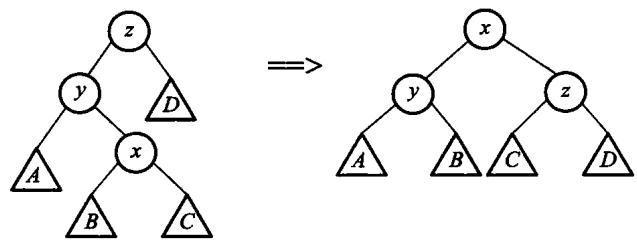
例如链 10 -> 20 -> 30 中访问 30，是右–右一字形：先围绕 10 左旋，再围绕 20 左旋，30 到根。若 10 的右孩子是 30、30 的左孩子是 20，则访问 20 是右–左之字形，两次旋转方向相反。两种情况都把目标提两层，但一字形还把整条同向长链明显压短，这是不能把它替换成连续「父子单旋」的原因。
“均摊 O(log n)”不等于每一次都快。访问深链末端的单次代价仍可达 O(n)；保证的是从任意初始树开始，一串 m 次操作的总成本为 O(m log n)（另加初始势能）。因此伸展树适合热点键反复出现、又不要求单次延迟上界的场景；实时系统若要求每次查找都在确定高度内结束，更适合 AVL 或红黑树。
伸展树实现简单，不必维护额外的平衡域；代价是单次操作可能仍是 O(n)，只是摊还之后是对数。 同一实现中的 SplayTree 使用 unique_ptr 维护子树所有权，访问后按一字形/之字形规则旋至根。
#本章小结
#Python 实现的证据链
class Trie:
def __init__(self): self.root=_Node(); self._size=0
@staticmethod
def _valid(word):
if any(c<'a' or c>'z' for c in word): raise ValueError("trie key must be a..z")
def insert(self,word):
self._valid(word); node=self.root; path=[]
for c in word: path.append(node); node=node.children.setdefault(c,_Node())
if node.terminal: return False
node.terminal=True; self._size+=1
for item in path: item.passing+=1
node.passing+=1; return True
def contains(self,word):
node=self._find(word); return node is not None and node.terminal
def starts_with(self,prefix): return self._find(prefix) is not None
def count_with_prefix(self,prefix):
node=self._find(prefix); return self._size if prefix=="" else (0 if node is None else node.passing)
def _find(self,text):
node=self.root
for c in text:
if c not in node.children: return None
node=node.children[c]
return node
def size(self): return self._size
def node_count(self):
def count(node): return sum(1+count(child) for child in node.children.values())
return count(self.root)
def keys_with_prefix(self,prefix):
node=self._find(prefix); out=[]
if node is None: return out
def collect(current,text):
if current.terminal: out.append(text)
for code in range(ord('a'),ord('z')+1):
c=chr(code)
if c in current.children: collect(current.children[c],text+c)
collect(node,prefix); return out
def erase(self,word):
if not self.contains(word): return False
words=[w for w in self.keys_with_prefix("") if w!=word]; self.__init__()
for value in words: self.insert(value)
return True
# >>> trie-longest-prefix
def longest_prefix_of(self,text):
node=self.root; best=0
for i,c in enumerate(text):
if c not in node.children: break
node=node.children[c]
if node.terminal: best=i+1
return text[:best]
# <<< trie-longest-prefixdef longest_prefix_of(self,text):
node=self.root; best=0
for i,c in enumerate(text):
if c not in node.children: break
node=node.children[c]
if node.terminal: best=i+1
return text[:best]def bit_of(key,index):
byte=index//8
return False if byte>=len(key) else bool((ord(key[byte])>>(7-index%8))&1)算法12.1 的可利用空间表属于存储管理侧，因此不给 Python 薄封装；最佳 BST 的动态规划属于算法侧：
def optimal_bst(successful, unsuccessful):
if len(unsuccessful) != len(successful) + 1: raise ValueError("weight count")
n = len(successful); cost = [[0]*(n+1) for _ in range(n+1)]; root = [[0]*(n+1) for _ in range(n+1)]
weight = [[0]*(n+1) for _ in range(n+1)]
for i in range(n+1): weight[i][i] = unsuccessful[i]
for length in range(1, n+1):
for first in range(n-length+1):
last = first + length; weight[first][last] = weight[first][last-1] + successful[last-1] + unsuccessful[last]
cost[first][last] = 10**30
for r in range(first+1, last+1):
candidate = cost[first][r-1] + cost[r][last] + weight[first][last]
if candidate < cost[first][last]: cost[first][last], root[first][last] = candidate, r
return cost, root多维数组按行优先或列优先顺序存放，按下标随机访问；三角、对称、稀疏矩阵可以压缩。广义表的元素可以是原子或子表，头尾分解对应递归。动态存储要处理碎片和回收：首次/最佳/最坏适应，引用计数与标记清除。Trie 按字符分支并共享前缀，Patricia 压缩单孩子路径。最优 BST 用动态规划选根；AVL 用平衡因子和四种旋转保证 O(log n)；伸展树用访问后上移做均摊平衡。可利用空间表是定长结点的显式空闲栈，不劫持全局 new。
#习题
#补充概念与上机题（参考课程第 12 章）
- 用 CSR 三数组表示稀疏矩阵，并计算
y = A x；复杂度按非零元数nnz表示。 - 说明共享广义表为什么不能简单递归释放，并设计引用计数或访问标记方案。
- 证明长度为
N的字符串所有后缀插入 Trie 后，每个不同子串对应 Trie 中一个结点；分析最坏时间。 - 实现 AVL 的四种旋转，并用中序遍历验证旋转前后序列不变。
- 写出 3×4 数组按行优先时 a2,1 相对首地址的偏移（元素占 1 个单元）。
- 把 4 阶下三角压成一维，给出 a3,1 的下标。
- 说明纯表、再入表、循环表分别对应什么图，释放时要注意什么。
- 空闲块按地址顺序是 900、1500、700。举一个请求，使首次适应、最佳适应、最坏适应分别选中三块不同的空闲区；再说明为什么「能不能满足」这个条件本身分辨不出三种策略。
- 把
can、car、cat插入字母 Trie，画出结果，并写出查找cab的失败路径。 - 教材样例 p={1,5,4,3}、q={5,4,3,2,1}，指出最优 BST 的根和总成本。
- 从空 AVL 依次插入 1、2、3，画出每次旋转。再插入 0，需要旋转吗。
- 伸展树中，之字形和一字形各升几层？为什么半伸展适合连续访问同一结点。
#上机题
- 实现下三角矩阵的压缩存储，并支持按下标读写。
- 用句柄池管理固定个数的结点，测试耗尽、归还、复用和重复释放。
- 实现一棵字母 Trie 的插入和查找，用一组单词对拍
std::set。 - 按教材权重实现最优 BST，输出根表并重建树形。